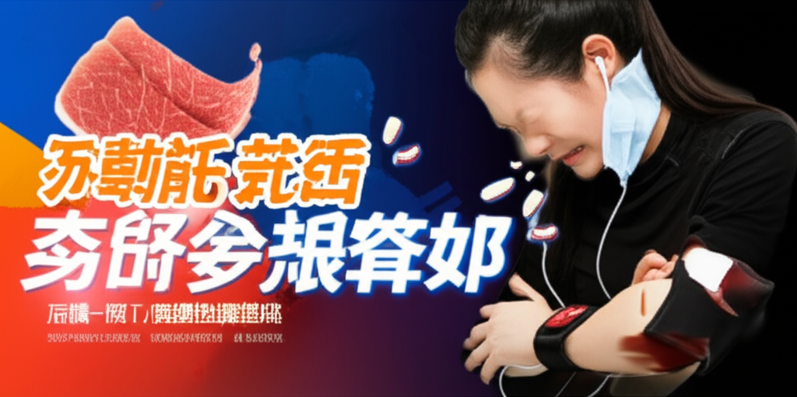

近期新聞報導中，高血壓、三高（高血壓、高血脂、高血糖）等議題頻繁出現，顯示民眾對心血管健康的關注度日益提升。從飲食習慣、運動習慣、體重控制到醫療技術的進步，各方面都在努力預防和控制高血壓及其帶來的健康風險。本篇彙整近期相關新聞，整理出幾個重點，供讀者參考。
多篇報導指出，不良的飲食習慣和缺乏運動是導致高血壓的重要因素。TVBS新聞報導提及「偏愛吃『這類食物』又不愛運動」容易罹患高血壓且未控制的後果。年代much台健康好生活也提醒換季時節更應注意高血壓，可透過攝取富含鉀離子的食物來穩定細胞膜，進而幫助控制血壓。這些報導皆強調了健康生活方式的重要性，提醒大眾應避免刺激性食物、注意飲食控制、並保持規律運動。
台灣好新聞和自由健康網均報導了50歲張先生的故事，他因父母有高血壓病史，在30歲時已發現血壓偏高，但未及時留意，直到職場前輩因心肌梗塞猝逝才驚覺健康的重要。這反映了年輕族群對三高的警覺性不足，以及及早發現和控制三高的重要性。報導中提到，透過及早開始控制三高，可以有效守護心血管健康，降低逾5成心臟病風險。
除了改善生活習慣，新聞中也提到了控制高血壓的方法與新技術。王必勝透過減重16公斤，成功擺脫了高血壓藥物，證明了體重控制對血壓的影響。另外，香港大學醫學院研發出臨床評分工具，幫助中風患者控制高血壓，顯示醫療技術的進步也在為控制高血壓提供更多可能性。僑務委員會新聞則提醒長輩控制鹽分攝取，維持血壓在140/90以下，有三高問題者應遵照醫囑服藥。
高血壓是一個需要長期關注和管理的健康問題。透過健康飲食、規律運動、體重控制，以及及早發現和控制三高，我們可以有效降低高血壓帶來的健康風險。此外，醫療技術的進步也為高血壓的控制提供了更多選擇。希望這些資訊能幫助讀者更好地了解高血壓，並採取積極的措施來維護自身的心血管健康。